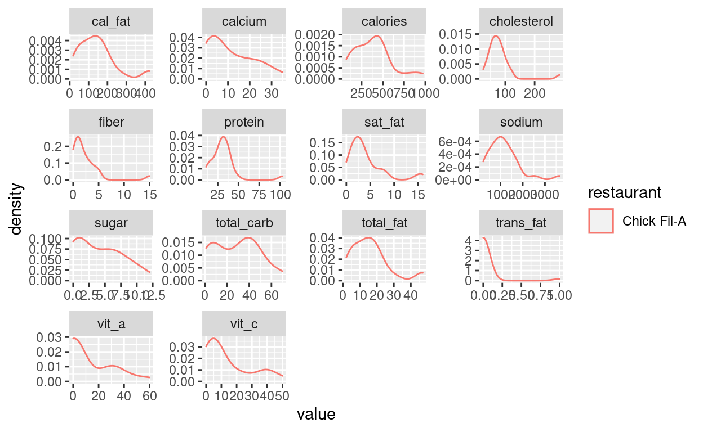

In today’s lecture, the script is the result of experimenting with unseen data as seen in the video. You can refer back to it in order to get the code if the video goes to fast. By itself, the script will be less useful than the script for regular lectures. I hope you can learn something from how I approach a new task and how I handle mistakes and errors. The video is largely unedited; I only removed a portion where all attempts at webscraping failed for a while because my internet connection was gone…
Video
Watch today’s video here:
Slides
This special Christmas video has no slides.
Script
Christmas Theme!
- Christmas RStudio theme: https://github.com/gadenbuie/rsthemes
Advanced Rmarkdown
- Using the RStudio plugin to insert citations directly from Zotero
- Other output formats:
- https://bookdown.org/yihui/rmarkdown/
- https://github.com/rstudio/rticles
- note: tinytex package for pdf outputs
Finding Help Easier
Into the Unknown: An Example Analysis of Unseen Data

The Data: Fast Food Entrees
Find the data here.
fastfood <- read_csv("data/fastfood.csv") %>%
select(-salad, -X1) %>%
distinct(restaurant, item, .keep_all = TRUE)
fastfood
# A tibble: 513 x 16
restaurant item calories cal_fat total_fat sat_fat trans_fat
<chr> <chr> <dbl> <dbl> <dbl> <dbl> <dbl>
1 Mcdonalds Artisan Gr… 380 60 7 2 0
2 Mcdonalds Single Bac… 840 410 45 17 1.5
3 Mcdonalds Double Bac… 1130 600 67 27 3
4 Mcdonalds Grilled Ba… 750 280 31 10 0.5
5 Mcdonalds Crispy Bac… 920 410 45 12 0.5
6 Mcdonalds Big Mac 540 250 28 10 1
7 Mcdonalds Cheeseburg… 300 100 12 5 0.5
8 Mcdonalds Classic Ch… 510 210 24 4 0
9 Mcdonalds Double Che… 430 190 21 11 1
10 Mcdonalds Double Qua… 770 400 45 21 2.5
# … with 503 more rows, and 9 more variables: cholesterol <dbl>,
# sodium <dbl>, total_carb <dbl>, fiber <dbl>, sugar <dbl>,
# protein <dbl>, vit_a <dbl>, vit_c <dbl>, calcium <dbl>Watch the video to find out how these small data cleaning steps came about.
fastfood %>%
count(restaurant)
# A tibble: 8 x 2
restaurant n
<chr> <int>
1 Arbys 55
2 Burger King 70
3 Chick Fil-A 27
4 Dairy Queen 42
5 Mcdonalds 57
6 Sonic 53
7 Subway 96
8 Taco Bell 113Counting things is always a good sanity check for your data.
fastfood %>%
count(restaurant, item, sort = TRUE)
# A tibble: 513 x 3
restaurant item n
<chr> <chr> <int>
1 Arbys 2 piece Prime-Cut Chicken Tenders 1
2 Arbys 3 piece Prime-Cut Chicken Tenders 1
3 Arbys 5 piece Prime-Cut Chicken Tenders 1
4 Arbys Arby-Q Sandwich 1
5 Arbys Arby's Melt 1
6 Arbys Beef 'n Cheddar Classic 1
7 Arbys Beef 'n Cheddar Mid 1
8 Arbys Bourbon BBQ Brisket Sandwich 1
9 Arbys Bourbon BBQ Chicken Sandwich 1
10 Arbys Bourbon BBQ Steak Sandwich 1
# … with 503 more rowsWe will need the names of the restaurants.
restaurants <- unique(fastfood$restaurant)
restaurants
[1] "Mcdonalds" "Chick Fil-A" "Sonic" "Arbys"
[5] "Burger King" "Dairy Queen" "Subway" "Taco Bell" This is not a very refined plot. I really wanted to get to to the webscraping part to show you new exciting things.
fastfood %>%
filter(restaurant == restaurants[2]) %>%
pivot_longer(-c(restaurant, item)) %>%
ggplot(aes(value, color = restaurant)) +
geom_density() +
facet_wrap(~ name, scales = "free")

Webscraping with rvest
The restaurant names on the links to the complaints-website are slightly different to the names we have in our fastfood dataset. Some things are just faster to do manually than figuring out an algorithmic way of achieving. Although in this case, it could have been easier because there is only one exception (sonic) to “make everything lowercase and replace space with hyphens.”
restaurant_names <- c(
"mcdonalds",
"chick-fil-a",
"sonic-drive-in",
"arbys",
"burger-king",
"dairy-queen",
"subway",
"taco-bell"
)
Get some data! Try it on one example, then write a function to do so. Then test the function on some examples.
n <- 1
restaurant <- restaurant_names[8]
url <- glue("https://www.complaintsboard.com/{restaurant}/page/{1}")
get_complaints <- function(url) {
read_html(url) %>%
html_nodes(css = ".list-text") %>%
html_text()
}
This chunk is set to eval=FALSE. Meaning we can still run it manually but it will not run every time we knit the document or press “run all chunks.” This enables us to keep the code for a long running computation in the document while not having to run it every time. A more elegant approach would have been to refactor this into it’s own R script after the initial exploration.
complaints <- crossing(
restaurant = restaurant_names,
n = 1:30
) %>%
mutate(
url = glue("https://www.complaintsboard.com/{restaurant}/page/{n}"),
complaints = map(url, possibly(get_complaints, ""))
)
write_rds(complaints, "data/complaints.rds")
Now we can load the scraped data.
complaints <- read_rds("data/complaints.rds")
The is a lot of steps happening here. First, we use the tidytext package to extract words from the complaints, then we remove very common words called stop words. We then get the most commong words per restaurant and finally match the original restaurant names with the names we had to use for the webscarping links.
names <- tibble(
restaurants,
restaurant_names
)
top_complaints <- complaints %>%
unnest_longer(complaints) %>%
tidytext::unnest_tokens(input = complaints, output = "word", token = "words") %>%
anti_join(tidytext::stop_words, by = c("word")) %>%
count(restaurant, word, sort = TRUE) %>%
group_by(restaurant) %>%
slice_max(order_by = n, n = 15) %>%
ungroup() %>%
left_join(names, by = c("restaurant" = "restaurant_names")) %>%
select(-restaurant) %>%
rename(restaurant = restaurants)
top_complaints %>%
rmarkdown::paged_table()
Next, we do a bunch of copy-pasting to quickly prototype an app, where the user can select a restaurant, get a quick overview of the feature distributions and see the most common words in complaints.
A shiny app
See app.R in the folder for lecture 8. Note, that because shiny apps are usually in their own project, not in some nested file structure of a course website, there are some shenanigans going on with the file paths. When run locally, R still has the working directory of the project. But when deployed, only the folder in which the app.R file lives is deployed, with no notion of being at the end of some project file path. So the folder where the app.R file lives becomes the new file path when the app is deployed online.
Feedback
I will send round a link with a feedback form. It is anonymous, so I have no way of tracking who submitted it. I will just assume you all did and count it as a completed exercise.